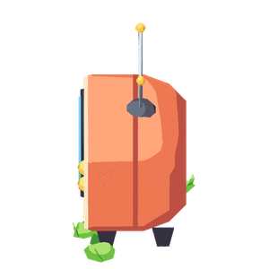
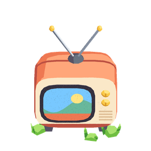

Hoje: a TV de ladoa tela olha para o oeste e a câmera olha do sul: a imagem não aparece

(a) A TV de frentea imagem aparece, mas o pet teria de ficar de costas: o sprite não tem costas, e a reação some

(c) A TV em três quartos40° para o sul (PROPOSTO): a imagem aparece e o pet continua de perfil, olhando para ela